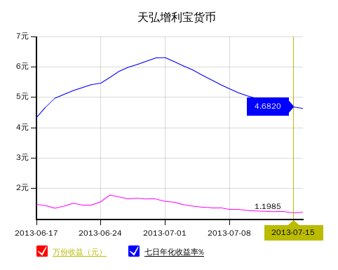

会赚钱的支付宝
余额宝
$$$
余额宝界面
余额宝是由第三方支付平台支付宝推出的一项余额增值服务。用户在支付宝网站内就可以直接购买基金等理财产品，并且可以获得相对较高的收益。
- 中文名：余额宝
- 外文名：Yu Ebao
- 开发者：支付宝
- 核心内容：余额增值、获得收益
- 产品口号：会赚钱的支付宝
- 上线时间：2013年6月17日
- 突出优势：随时消费支付、转出
客户转入余额宝的资金，即向余额宝的合作方天弘基金公司购买了增利宝货币基金，并享有货币基金的投资收益。
收益介绍 $$$
计算公式
余额宝资金/10000*基金公司公布的每万份收益
术语释义
- 每万份收益：是指把货币基金每天运作的收益平均摊到每一份额上，然后以1万份为标准进行衡量和比较的一个数据，它是具体每天计入投资人账户中的实际收益。
- 七日年化收益率：是货币基金最近7日的平均收益水平换算成一年后计算出的收益值，相当于银行存款时说的年利率。
余额宝收益时间列表

2013年银行存款利率
案例分析 ???
假设一个人手里有1万块钱，哪种方法获利多？ 存银行还是余额宝?

前景如何 ???
截至7月13日,支付宝和天弘基金联手开发的余额宝问世才短短一个月,资金规模就已突破百亿元,客户数突破400万户。更让银行觉得可怕的是,这个数字还在以每天上亿元的速度在持续。
“余额宝”内的资金能随时用于网上购物、支付宝转账等支付，其所获收益又比银行活期存款更高，阿里金融真正实现了平民理财，懒人理财。
招商银行前行长马蔚华说过，招行最大的威胁来自马云，而非其他银行。因为，新兴的互联网金融正在一点点蚕食原本属于银行的领地，势必对银行的业务造成冲击。
参考资料 !!!
- 百度百科 - 余额宝，http://baike.baidu.com/view/10673910.htm
- 天弘基金官网，http://www.thfund.com.cn/
- 人民币利率一览表 - 和讯网，http://data.bank.hexun.com/ll/dkll.aspx